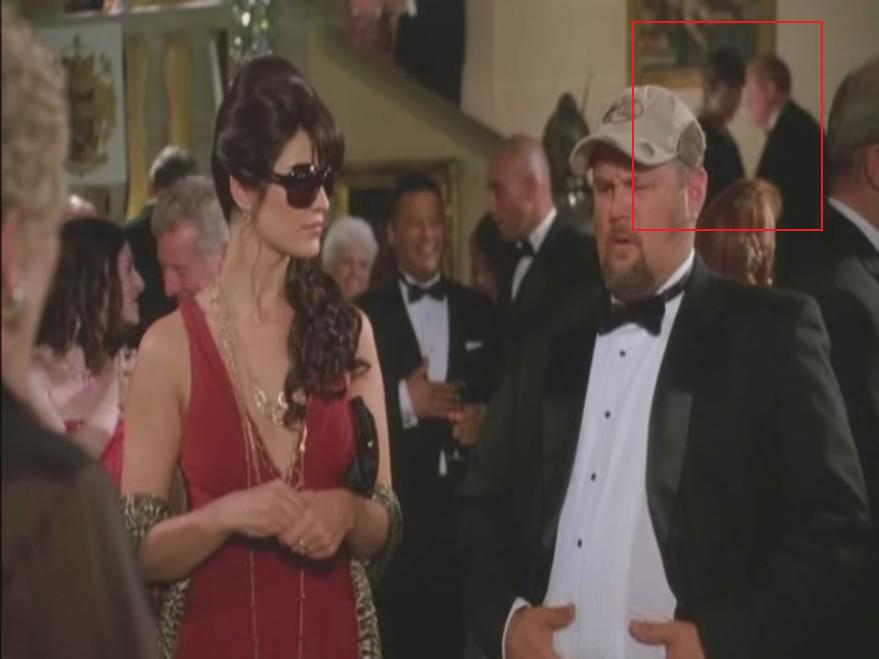
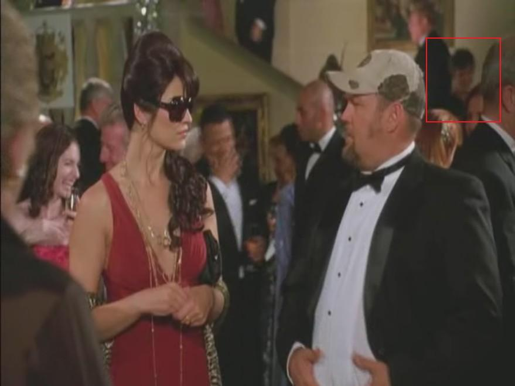

I gotta go pinch out a grumpy
Greetings Fans! You may recall from last year, Carol worked on a scene in Witless Protection. We never got a chance to see it in the theater (and having seen parts of it now, I guess that might not be a bad thing). However, in one memorable scene, you can catch a glimpse of Carol over Larry the Cable Guy's left shoulder. Perhaps not the most prestigious scene, but a memorable line, nonetheless!

"I tell you what..."

"... that beef jerky and marmalade ain't sittin' too good. You got a crapper? I gotta go pinch out a grumpy."
Carol looks radiant as she descends the stairs, smiling as she greets some unseen acquaintance... oblivious to the gastrointestinal distress occurring just across the room!
Originally published on the Blogspot site